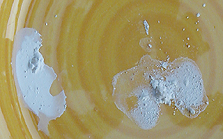

Les
sels,
leur formation
* ils sont ininflammables
* à l'échelle moléculaire, leurs deux
principaux éléments constitutifs sont plus ou moins sécables selon les
cas. A ce sujet lire Electronégativité, liaisons,
liaisons polaires. Sur la solvatation voir un
passage in Les
dialogues de Dotapea, chap. III et un autre
passage in
chap. XVIII). Sur l'aspect ionique des sels, lire un
passage in chap. XIX.
Ils sont l'association de deux types de corps, groupes moléculaires ou atomes
singuliers.
Un sel est la réunion d'un anion et d'un
cation. Les
non-métaux en présence d'oxygène, sont
normalement anioniques, de charge négative, alors qu'en présence du même
oxygène, les métaux sont cationiques, positifs.
Mais l'oxygène n'est pas nécessaire pour que l'échange électronique se
maintienne (le couple qu'est le sel de table, NaCl, se maintient très bien
tout seul).
Note : les sels d'ammonium ("sels
ammoniacaux") ont des
propriétés légèrement différentes. Ils peuvent par exemple être
inflammables et sont globalement plus instables et dégradables que les
sels dont le cation est métallique.
Formation
des sels
Typiquement, un sel se forme quand l'hydrogène d'un acide
est remplacé par un métal alcalin, un oxyde métallique
ou par extension quelquefois, une autre base comme de
l'ammonium, spécialiste des substitutions. De plus, les non-métaux
halogènes
(hallos = sel), forment facilement des sels - d'une autre catégorie - avec différents métaux.
Exemple : NaCl, où Na est un métal alcalin, le sodium, et Cl un non-métal
halogène, le chlore. D'autres non-métaux peuvent également former des sels, comme le sélénium qui s'associe notamment au palladium ou au
cadmium ou bien encore le soufre ou le carbone, non-métaux non halogènes
très communément associés à différents métaux.
On a donc, sans rentrer dans le détail
ACIDE
+ BASE = SEL +
H2O
(avec
un alcool au lieu d'une base, on obtiendrait un ester)
ou
ACIDE
+ MÉTAL ALCALIN OU OXYDE MÉTALLIQUE OU AMMONIUM =
SEL + H+
ou
NON-MÉTAL + BASE = SEL
+ OH-
ou
NON-MÉTAL +
MÉTAL ALCALIN OU OXYDE MÉTALLIQUE OU AMMONIUM
= SEL
L'union entre deux éléments que constitue n'importe quel sel peut être plus
ou moins "solide", ce qui signifie que certains sels peuvent être "cassés" plus
aisément que d'autres.
Charge électrochimique d'un
sel
Elle résulte de la force
ou de la faiblesse de ses composants.
Lire
explications détaillées
in
Les dialogues de Dotapea, Chap. III, Caséine, phosphore et dissociation.
Sel
en solution et dissociation
Lire
passage
in Les dialogues de Dotapea, Chap. III, Caséine, phosphore et
dissociation.
Sels et arts plastiques
L'apparition fortuite d'un sel dans un travail pictural est évidemment
catastrophique. C'est l'une des raisons pour lesquels une connaissance de la
chimie des supports, des pâtes et des diluants (on pense en premier à la qualité
de l'eau du robinet) qui sont mis en oeuvre est bien souvent essentielle.
Cependant, il ne faudrait pas pour autant "redouter" les sels aveuglément : certains
sont absolument indispensables et entrent dans la composition de peintures et
d'autres substances. Le carbonate
d'ammonium, par exemple, rend encore bien des services aux amateurs d'émulsions,
de cire saponifiée, etc., sans parler des
innombrables pigments qui sont eux-mêmes des sels.
Par ailleurs, il ne faut pas sous-estimer les possibilités plastiques
offertes par la formation contrôlée d'un sel.
Une démonstration

Pour donner une représentation concrète de ces propos, on a effectué une
expérience dont les résultats apparaissent sur la photo ci-contre.
A
gauche, une chaux mise en présence d'eau distillée chimiquement neutre. A
droite, la même chaux mise en présence d'eau de Javel diluée (ce
produit contient du chlore). Non seulement l'aspect est très différent, mais
il faut signaler en plus
* que l'eau de Javel a
immédiatement perdu toute odeur alors que le mélange était encore liquide
* que cette odeur
caractéristique n'est réapparue qu'au moment de nettoyer le support en le
grattant, opération qui s'est avérée nécessaire car le mélange à la Javel était
vraiment plus tenace que l'autre.
Un sel s'est donc bien formé très rapidement. L'aspect plastique, la résistance matérielle et la viscosité du
mélange chloré sont nettement différents. Une transformation de la matière a eu
lieu.
Bien entendu, le chlore est beaucoup moins concentré dans l'eau du robinet que dans
l'eau de Javel, mais chacun saisira la tendance et agira en conséquence.
Les
sels et la roche
On le sait : le sel marin, le sel de table peut aisément être mis en
solution.
Dans les roches de la surface de notre planète, pratiquement tous les sels pouvant être
mis en solution l'ont été ! Et cela depuis des milliards d'années, sous
l'effet de la pluie. Mises à part quelques poches intactes, la portion
superficielle de la croûte terrestre a été débarrassée de ces associations
qui se trouvent maintenant dans l'océan. Leur masse se chiffrerait en centaines
de milliards de tonnes.
Voir Electronégativité, liaisons, liaisons
polaires, sels minéraux, sel acide
et surtout ester.
Retour
début de page